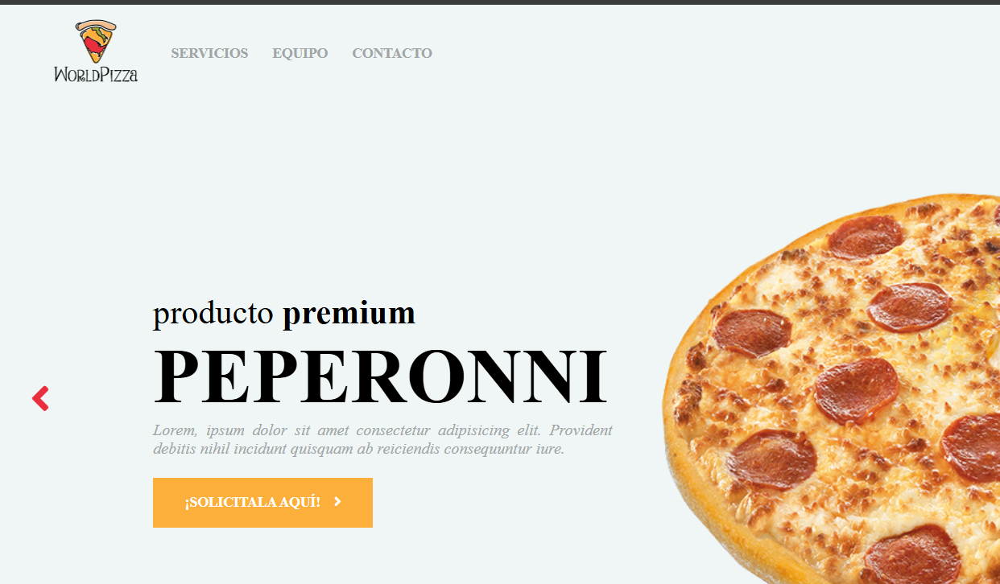

Pizza World

Este proyecto es una web ficticia de una pizzería, desarrollada como
parte del proyecto final de un curso de Udemy. Durante su
desarrollo, consolidé mis conocimientos en HTML y CSS, además de
descubrir las posibilidades de JavaScript para mejorar la
interacción del usuario.
Características del proyecto: Diseño moderno y responsive: La web se
adapta a distintos dispositivos, garantizando una experiencia fluida
tanto en computadoras como en móviles. Menú interactivo: Presenta
una lista de pizzas con imágenes atractivas en formato carousel.
Animaciones y efectos visuales: Implementados con CSS y JavaScript
para mejorar la estética y la experiencia del usuario. Formulario de
contacto y Navegación intuitiva.